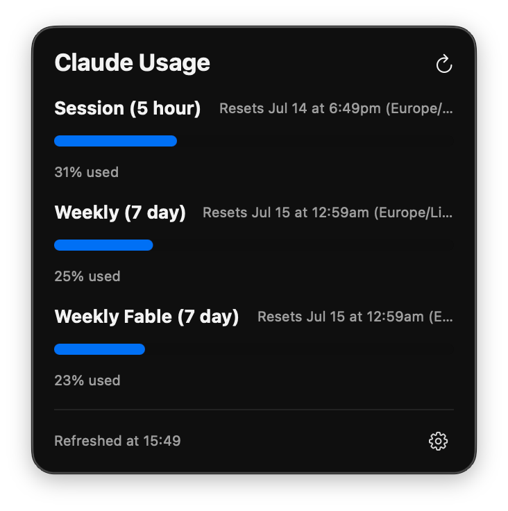
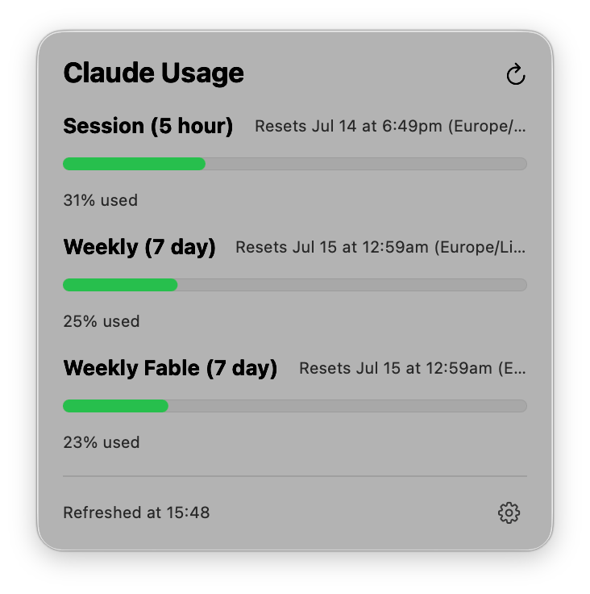

Your Claude Code quota,
live in the menu bar.
Reads straight from the claude CLI on your machine — no browser cookie, no login, no network calls beyond your own Anthropic account.
brew install djalmaaraujo/tap/claude-usage-menubar
Zero tokens to check your usage
/usage is a Claude Code CLI command answered entirely locally — it never reaches the model. The app just automates typing it every 60 seconds and turns the reply into progress bars. No hidden cost, no extra spend, ever.
See it in your menu bar


Install
Homebrew (recommended):
brew install djalmaaraujo/tap/claude-usage-menubar
Prefer to build it yourself? See build from source in the README.
Requirements & limitations
- macOS 13 or later.
- The Claude Code CLI installed and logged in — this app has no login flow of its own, it reads the same session the CLI already has.
- No Linux or Windows support.
- Not a hosted service — everything runs locally on your machine.
FAQ
Does it consume tokens to calculate usage?
No — /usage is intercepted locally by the CLI, never reaches the model. Zero cost.
Does it work on Linux or Windows?
No, macOS only (13+).
Does it cost anything?
Completely free and open source (MIT).
Any plans to support other LLMs?
No.